How would Rally Finland look if it used Remote Services?
Rally Finland is one of the jewels of the WRC calendar. Fast, flowing gravel roads, that have given the 1000 Lakes Rally the nickname "Gravel Grand Prix". Rally Finland has a very rich history in rallying, having featured in the WRC calendar ever since the inaugural season, and has given rally fans countless of memorable moments. This year is set to be no different, as the Ouninpohja returns for the first time since 2017. The organisers are also known for innovating, as there are new stages that feature every year in the rally's itinerary, with this year again being no exception, as the Saarikas stage is a road that's not been used before in the WRC. Next year gives is an opportunity for the organisers to innovate further, as remote services are set to return, giving the opportunity for rallies to go farther away from their rally base.
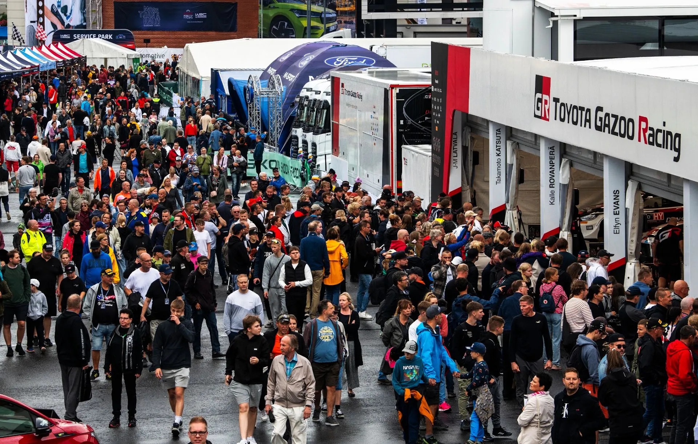
Janus Ree / Red Bull Content Pool
Back when remote services were still in use, Rally Finland went down south to Lahti in 2011 and 2012, utilising stages that hadn't been in used in the WRC since the 80s! In this concept, I will also be exploring another area the rally hasn't been to in quite some time. But this time instead of going south to Lahti, we will be going west, to Tampere.
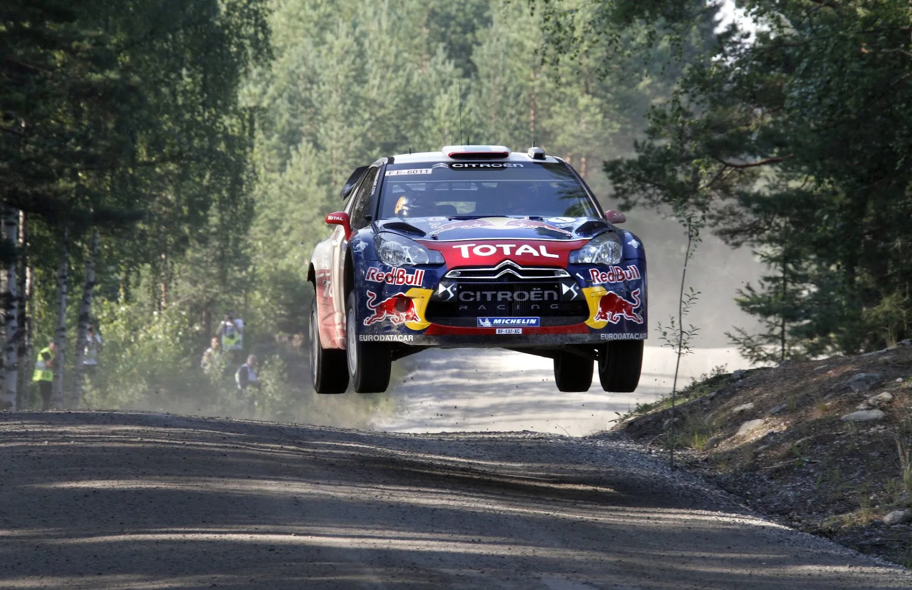
GEPA Pictures / Red Bull Content Pool
There have been many 1000 Lakes stages near Tampere that haven't been used since the turn of the Millennium. In 1999 the city stated their intend to be the host of Rally Finland for the upcoming editions of the event, but the rally stayed in Jyväskylä. Nowadays, we see stages in the Tampere area in the HYACenter Ralli, a rally that many drivers use as a warm-up for Rally Finland. So, let's see how a version of the event would look like if it incorporated stages to the East and North of Tampere on Saturday!
Thursday
Shakedown - Vesala - 4.04km
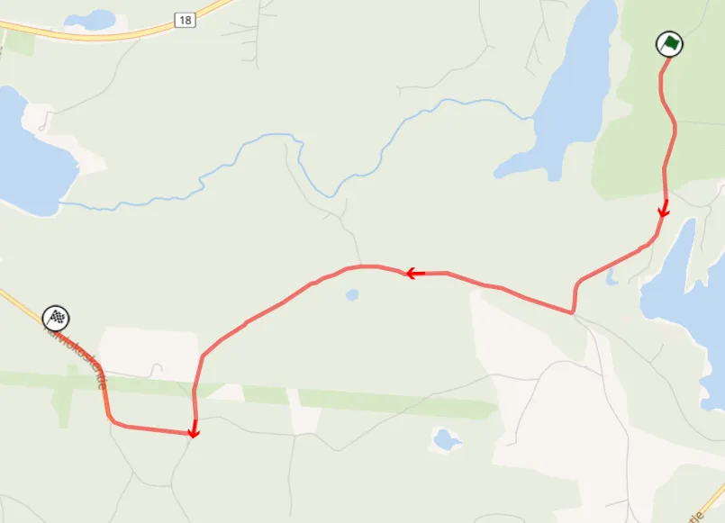
Map of the stage from Rally-Maps.com
For the pre event Shakedown I went with the one used in 2021. It's the reverse version of the stage, and it's a good representation of the roads that will be used in the rally.
Onboard of the stage
SSS1/10 - Laajavuori - 4.60km
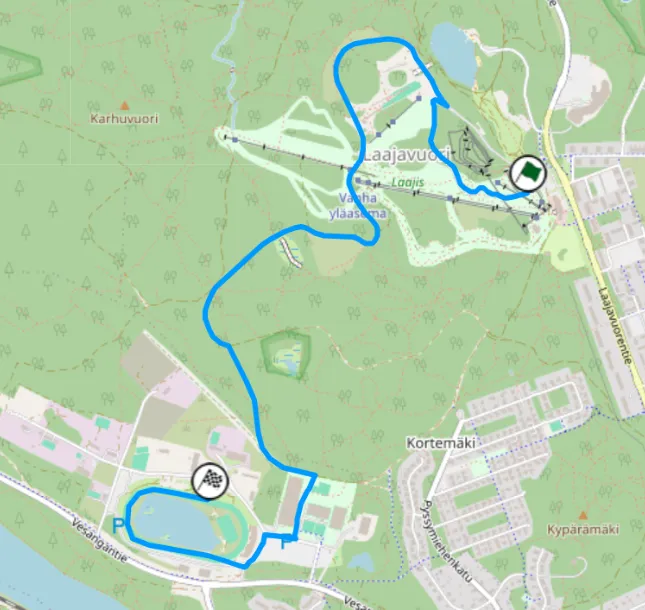
Map of the stage, it's a modern version of the old Laajavuori that ended in Killeri.
For the event's Super Special, I have gone with a version of Laajavuori that ends in the Killeri horse racing track. It's not something revolutionary, as the stage used to follow a similar path back in the 90s. I chose this over the modern-day Harju stage, because I am not a big fan of the version of the stage that's been in use since 2022. The stage is decent for a super special, and it uses roads that have been used many times either as a Shakedown or an actual stage. Those roads aren't really representative, but I feel it would be better than Harju. A second pass of the stage will be there for crews and fans after the end of the second loop of Friday
Friday - 9 Stages - 122.38km
Friday is not really something revolutionary, I have put together a day that is comprised of stages that have featured together before with one exception. Incredibly, 3 out of the 4 stages made it in the Top 30 WRC Stages of All Time list that I made in collaboration with Antti!
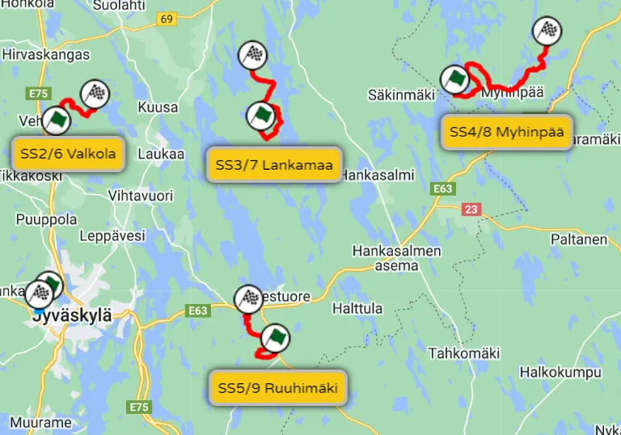
Map of the day's stages. After 2 loops of Valkola, Lankamaa, Myhinpää and Ruuhimäki, there is a second pass of Laajavuori.
SS2/6 - Valkola - 10.80km
The first stage of Friday is a stage that hasn't been used in this format before, and hasn't featured in a Rally Finland itinerary since 2007. It's the reversed version of the most commonly used stage, and it has a new start, that's not been used in the WRC before.
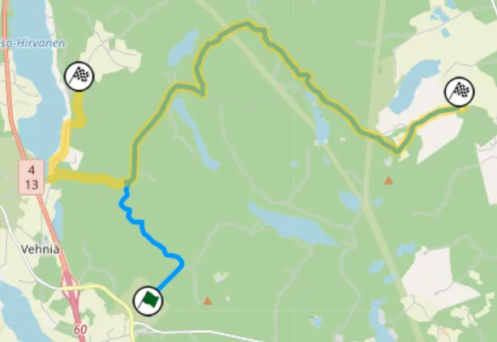
Map of the stage. With blue is the route I have chosen and with yellow is the 2007 version of the stage.
The stage starts off with a very fast section on a narrow road for about a kilometre or so. That narrow road is also considerably softer than the usual hard ones that is commonly found in Finland, so there could be a lot of ruts on the second pass. After a technical section, the stage joins the road that's associated with Valkola. It's still narrow, but it has a very nice flow, with jumps and crests appearing after the 8th kilometre. I chose this stage over Laukaa, partly because I am not the biggest fan of Laukka, and also because the organisers are known for bringing back stages that haven't been used in a while, like Halttula last year.
SS3/7 - Lankamaa - 14.21km
The second stage of Friday is a 1000 Lakes classic, Lankamaa. I've gone with the shorter version of the stage that was used last year. The stage starts off on a very fast narrow road, that becomes more technical and medium speed. Unlike most Rally Finland stages, Lankamaa doesn't have many ditches, but instead has rocks and banks on the side of the road that have caught people out in the past. The end of the Lankamaa is more technical, but mostly retains the same character as the rest of the stage. Last year, the average speed last year was an astounding 140km/h!
Onboard of last year's version of Lankamaa.
SS4/8 - Myhinpää - 23.02km
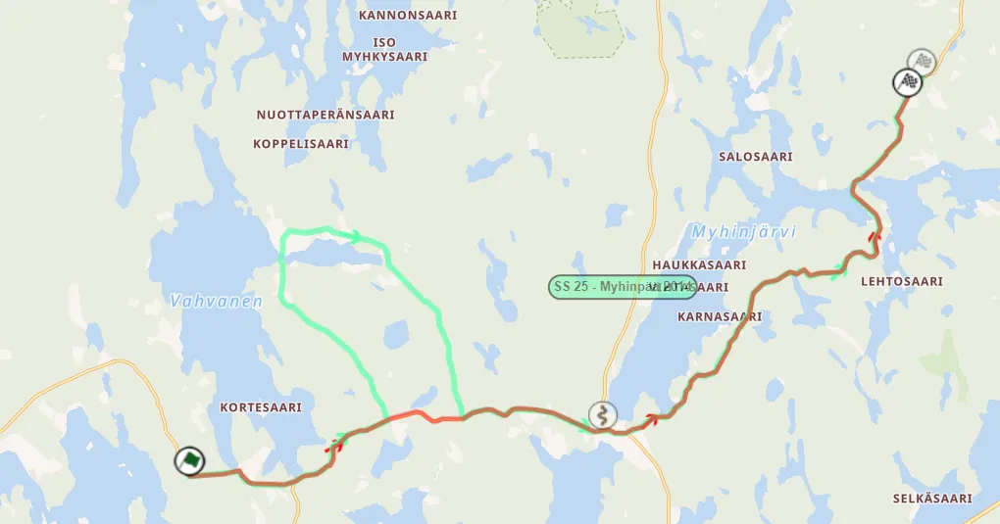
Map of the 2014 Myhinpää stage compared to the one that will be used this year. In this concept I have gone for the 2014 version of the stage.
Myhinpää returned to the schedule after an 8 year hiatus last year, and it gave us plenty of drama, as Kalle Rovanpera crashed out of the rally on this stage. It's another staple of Rally Finland, with many jumps, and it's also really fast, with the average speed last year being 133km/h in the rain! For this concept I have gone with the version of the stage used in 2014, that also includes a 7km "loop" where the stage goes on a narrow but fast road, to bring the stage length up to 23 kilometres.
Onboard of the stage from 2014, I have the same version of the stage in the itinerary for this concept.
SS5/9 - Ruuhimäki - 11.12km
Another Rally Finland classic, Ruuhimäki's claim to fame are the many jumps it has on the wide part of the stage. I have opted for the route that was used when the stage acted like the end-of-rally Power Stage, that features technical and narrow roads, as well as the wide and crest-filled big road. I would imagine that a very big man made jump wouldn't be the most sensible thing in the world for the flying finish, as this isn't the end of the rally, and drivers need to protect their cars for the rest of the event.
Onboard of the "Power Stage" version of the stage, last used in 2022.
Saturday - 7 Stages - 140.31km
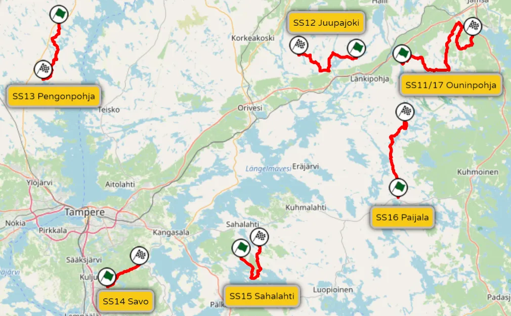
Map of the day's stages. The day includes many one-pass stages and a remote service in Tampere.
Saturday is where the "new" stuff really come in. This is the day where I made use of a remote service after SS13 in Tampere. It features stages that haven't featured in a while in the 1000 Lakes Rally, as well as some very classic Rally Finland roads. There's only one repeat stage, Ouninpohja. It again features 3 stages that made the Top 30 Greatest WRC Stages list.
SS11/17 - Ouninpohja - 32.98km
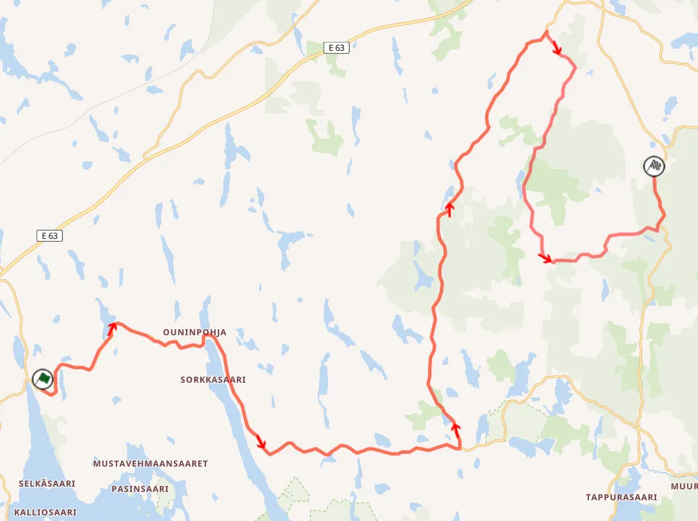
Map of Ouninpohja.
The only repeat stage of the day is the mighty Ouninpohja. The 33km road will be the opening and the closing stage of the loop. I am using this year's layout, as it is the most recent. The stage starts with the "Ouninpohjante" part, where the famous yellow house is. It's a very fast, flatout section of the stage, with some technical bits that have caught out drivers in the past. At 12.7km the stage turns to the Okskulmantie road. It's a wider and more straight-forward road let's say, and parts of it have been used in the Rapsula and Kakaristo stages in the recent past. 23.2km in, is the famous Kakaristo junction, after which the stage turns to Pitkäjärventie, a narrower and a lot more technical part. It’s a lot more rough and a real big change of rhythm compared to the previous roads of the stage. At around 32km, the stage rejoins a wider road and finishes with a flat out section.
Ogier's run of Ouninpohja back in 2013.
SS12 - Juupajoki - 17.91km
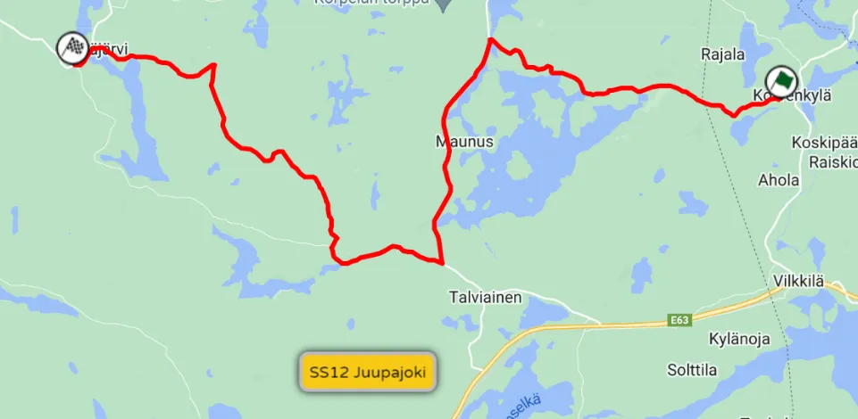
Map of Juupajoki.
After the first pass of Ouninpohja, we enter "uncharted territory" as most of the stages haven't been used since the 90s! Juupajoki was last used back in 2008, and it's the first one-pass stage of the loop. The only difference between the version of the stage I have in this concept, and the stage from 2008, is that the stage ends a bit earlier, just after Petääjärvi, to help with liaison and to not get too close to the maximum kilometres allowed in a loop/day.
Onboard of the stage from 2008.
The stage is mostly on narrow to medium wide roads, with technical and fast sections. The first part of the stage is the one that is the most technical, but that changes when it turns to a wider and faster road via a bridge at roughly 5kms. That part of the stage is very fast, with many flat out sections. At 9km, the stage turns off that road and into another narrower and more technical one. The stage finishes on a road that has many very narrow and fast sections.
SS13 - Pengonpohja - 14.4km
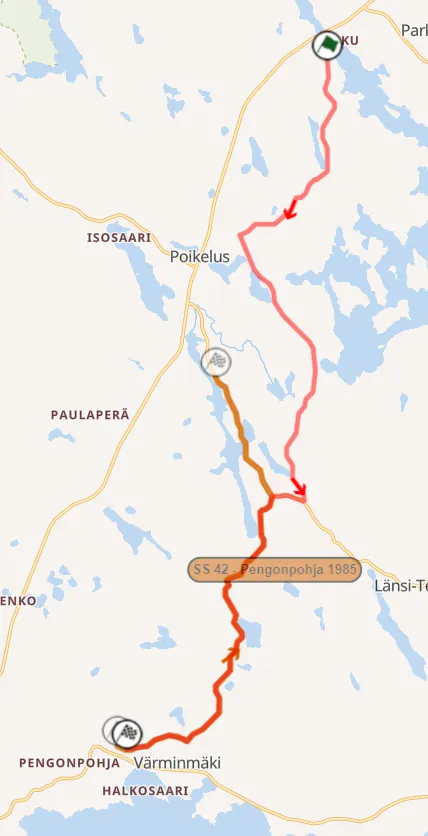
Map of Pengonpohja, as well as the classic version of the stage.
Pengonpohja hasn't featured in a 1000 Lakes Rally since the end of the Group B era all the way back in 1986! Despite that, it's still fairly well known amongst Finnish fans. The version of the stage I've included in this itinerary is in the opposite direction from the classic one from 1986, with the stage changing route 2km before the finish.
Onboard of the classic Pengonpohja stage.
Onboard of the modern version of Pengonpohja.
Most of the stage is on medium-wide roads, with nice flow. The start especially has many jumps and crests. The last 6km, in the classic Pengonpohja road, are more technical, with many turns one after the other. There are also many blind corners after crests, and elevation changes!
SS14 - Savo - 8.34km
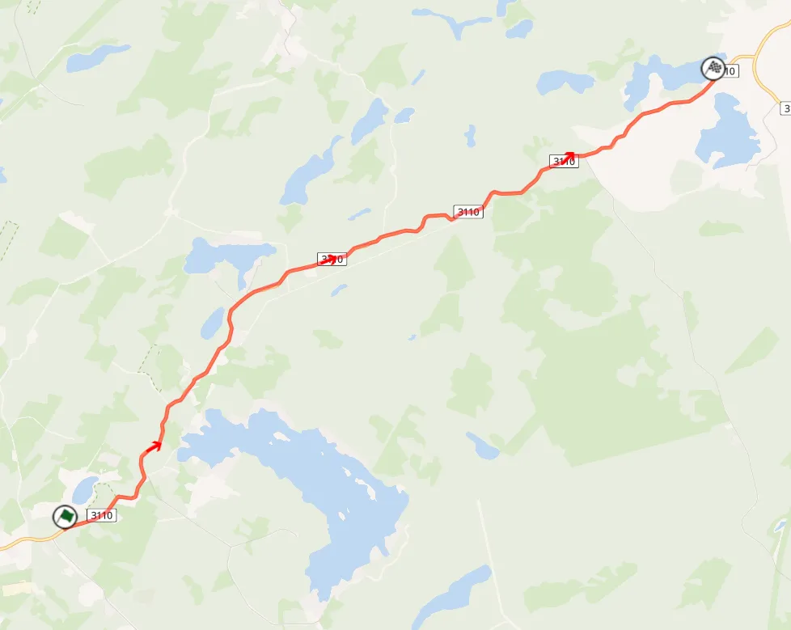
Map of SS14, the classic Savo stage.
Savo may not have featured in a 1000 Lakes itinerary since 1995, but it's still fondly remembered by many Finnish fans. It's the most famous stage in the region. It's known for its very nice flow and many crests, and it is a stage that requires precision and commitment to get right. Savo reminds me more of stages in the South Island in New Zealand, than the typical Rally Finland stages, as there aren’t many straights and flat-out sections, instead there are many cambered turns following one another in succession.
We have an indication of what Savo would look like in Rally Finland, as Kalle Rovanpera did the HYACenter Rally with his Yaris Rally1 last year!
SS15 - Sahalahti - 13.51km
Sahalahti is a stage that hasn't been used since the last time the event was near Tampere in 1999. The most recent version of the stage that was in a Rally Finland itinerary can no longer be used, as parts of it have been paved. Most recently, some gravel parts of the stage from 1995 acted as the pre-event Shakedown for the HYACenter Ralli in 2023. This version of the stage utilises the same roads as the 1999 stage, only in reverse, starting just after the end of the tarmac.
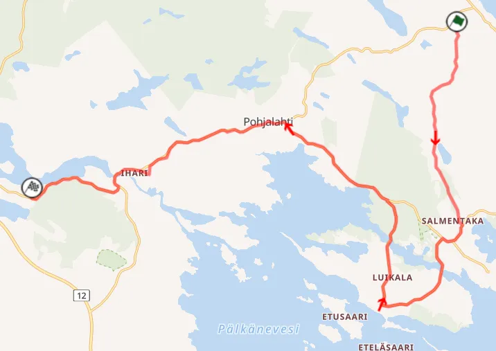
The map of the 1999 stage. The part that passes through Ihari has since been paved.
It's a fast stage, perhaps too fast at times, on narrow to medium wide roads. It has a very interesting and technical section from 4km to 8km, that is connected to the rest of the stage by 2 narrow wooden bridges.
SS16 - Päijälä - 20.19km
Päijälä is a very fast, technical stage with many jumps. It's a tricky road, and has caught out a lot of drivers in the past. This fan favourite stage starts on a wide-ish road that changes between technical and fast. The many flatout sections, with crests and jumps are mostly on the Päijälä road that start from 10.3km onwards.
Onboard of the stage. It's unchanged compared to 2024.
Sunday - 4 Stages - 56.02km
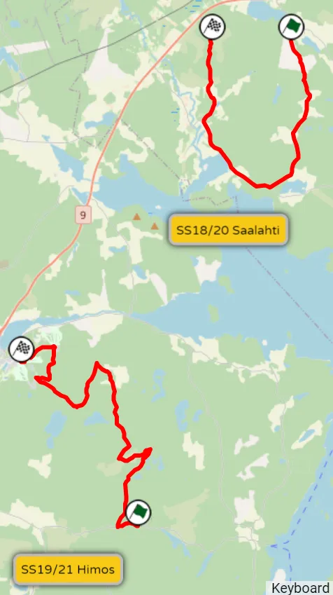
Map of the day's stages. Sunday is different compared to previous years.
Sunday is a bit different on this concept compared to previous years. I used Laajavuori and Ruuhimaki already, so I had to get a bit creative for the Power Stage. A notable omission from this Sunday is that there are no stages in the Moksi area.
SS18/20 - Saalahti - 12.38km
Saalahti is usually a 4km sprint, but in my concept, I have changed it significantly! This version of Saalahti was only used once in the 1000 Lakes Rally, in 1980, and has since only been used in regional rallies, sometimes with the Ahvenus name.
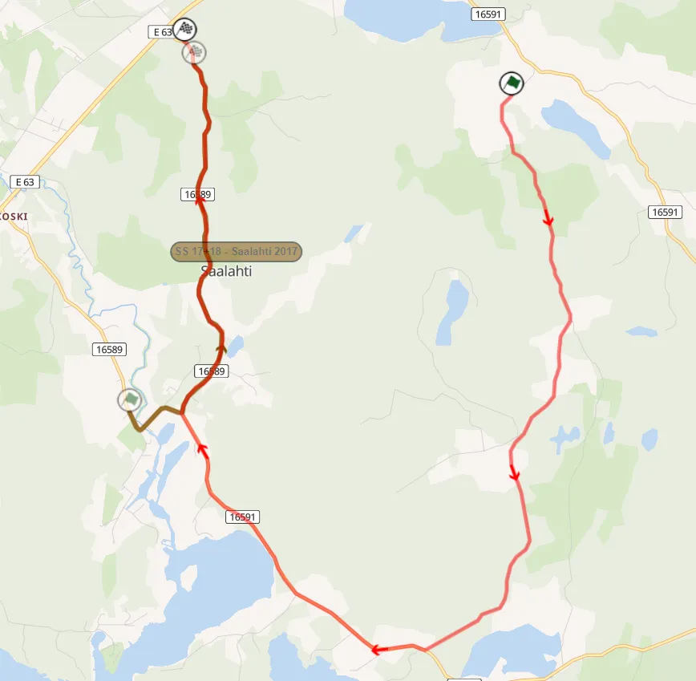
Map of SS18/20. With brown is the version of the stage from 2017.
The new sections are like a roller coaster! In the first 6km, there are many crests and jumps on a cambered, medium wide road that's very fast. After that, the remaining 3km before the stage joins it's usual route are similar, with the road becoming faster and narrower at parts, and also more compact. At 9.31km there's a very nice section with a jump that leads onto a bridge, before a junction.
Onboard of a rather snowy version of the stage.
SS19/21 - Himos - 15.65km
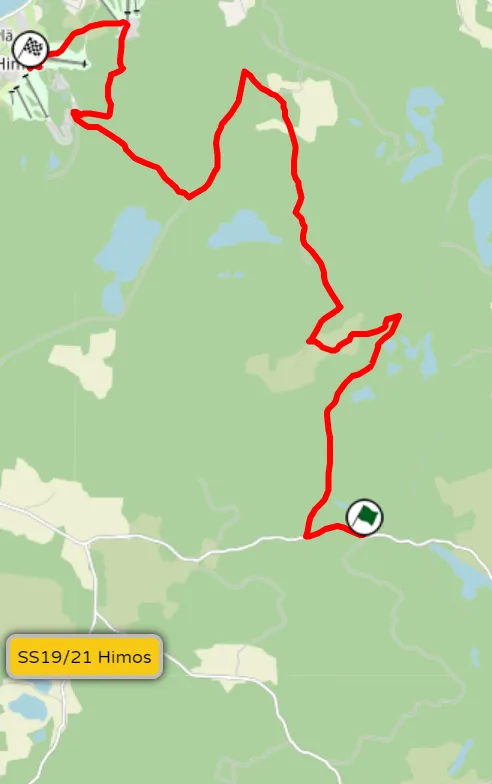
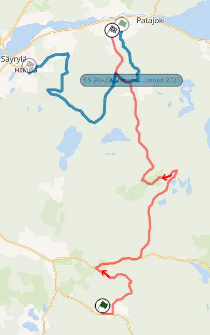
On the left you can see a map of the stage. It's essentially a combination of 2022's Patajoki and last year's Himos-Jamsa
With Laajavuori and Ruuhimäki already used earlier in the rally, I decided to get creative and combine last year's Power Stage, Himos - Jämsä, and Patajoki from 2022. The stage starts after the narrow technical section, where Kalle Rovanperä crashed in 2021, using mostly roads associated with the Vaheri or Himos stages. It's fast and flowing with many crests and jumps. After 8km, the stage becomes narrower, but remains fast. Following a technical section, after which the stage becomes faster and wider, it joins the route of last year's Power Stage. The stage finishes at the Himos Ski Resort, with the podium being where it was last year.


Comments